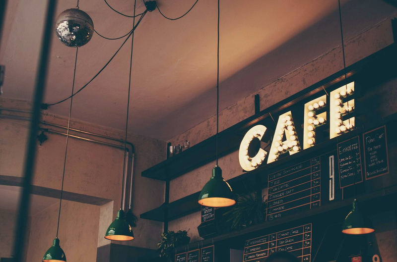
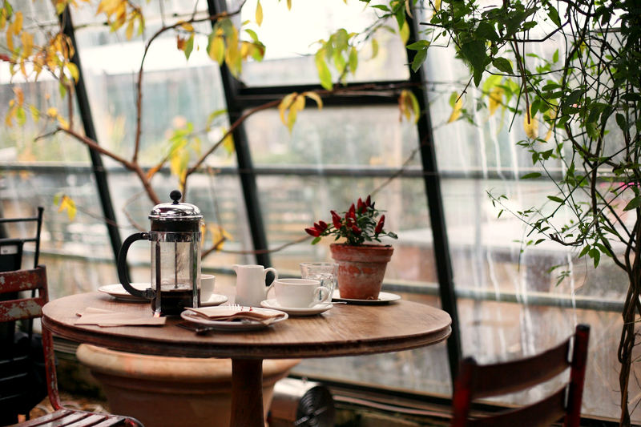
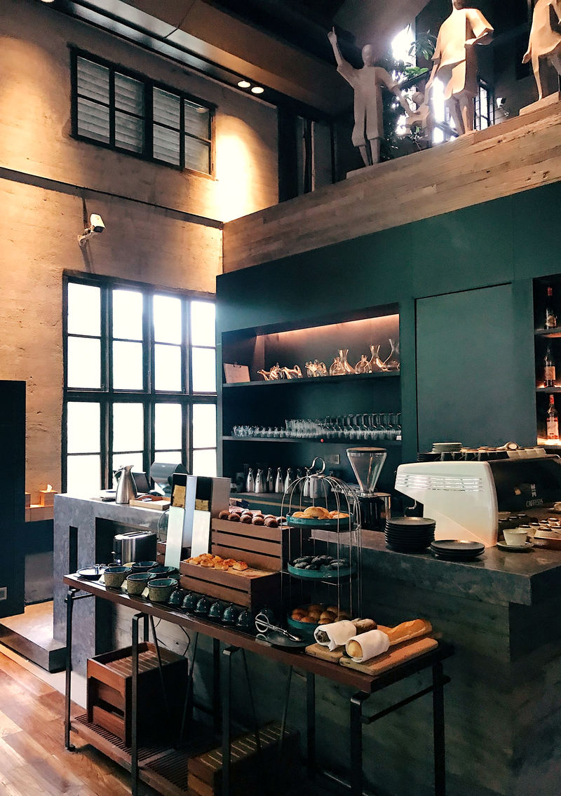
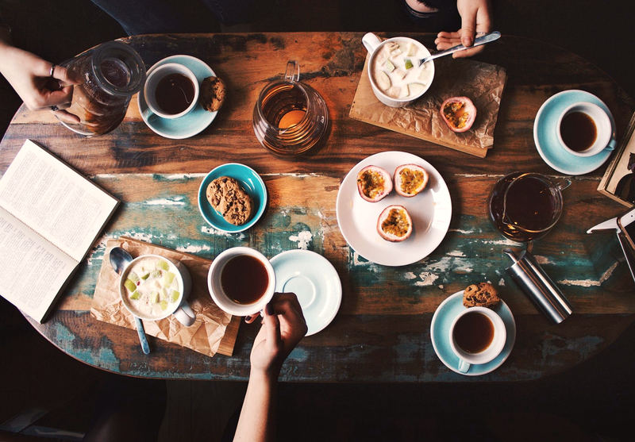
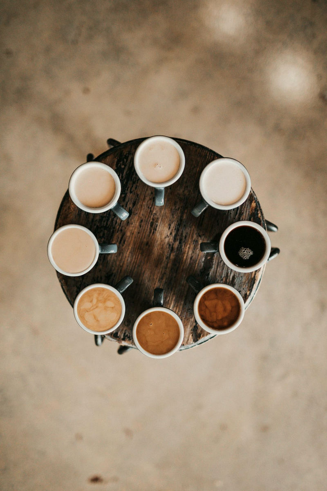

The room
Stay until the lamps come on.
A photographic walk through the house as it was designed for this concept — glass and plants by day, a quieter bar in the evening. These interiors are licensed stills, not a café on a street.



Atmosphere
Written as a place you could sit, not a place you can find.
The visit page keeps the hours and the invented plan. The story page keeps the reasons the house was drawn this way.
